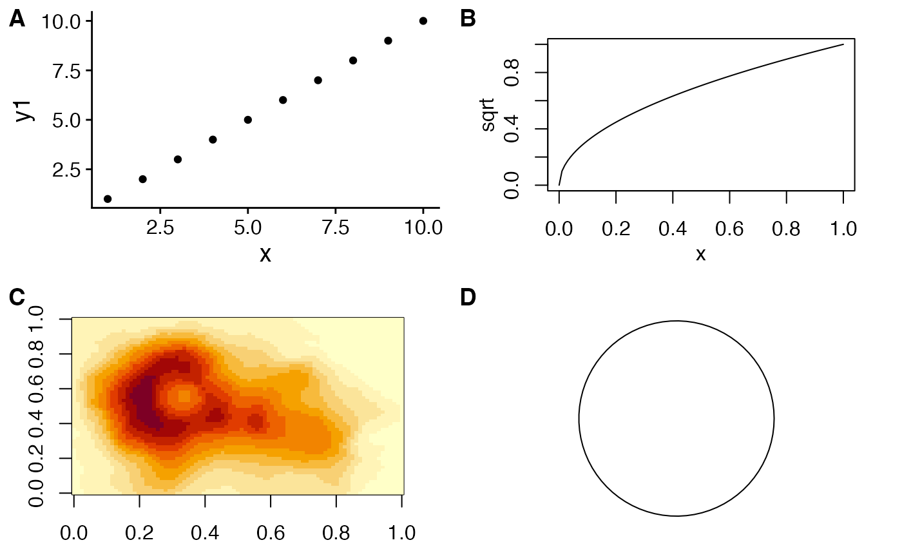
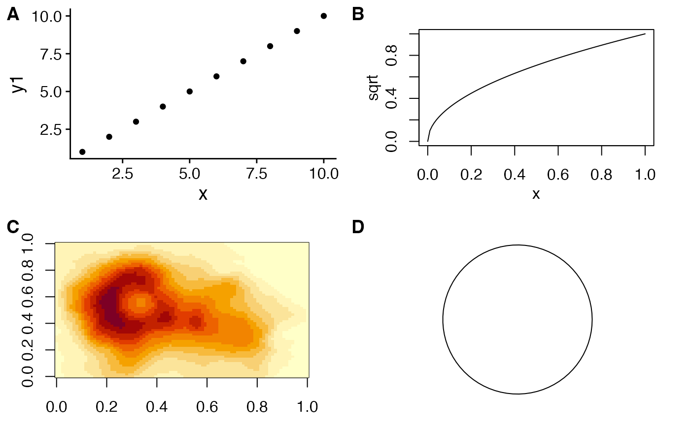

Arrange multiple plots into a grid.
plot_grid(
...,
plotlist = NULL,
align = c("none", "h", "v", "hv"),
axis = c("none", "l", "r", "t", "b", "lr", "tb", "tblr"),
nrow = NULL,
ncol = NULL,
rel_widths = 1,
rel_heights = 1,
labels = NULL,
label_size = 14,
label_fontfamily = NULL,
label_fontface = "bold",
label_colour = NULL,
label_x = 0,
label_y = 1,
hjust = -0.5,
vjust = 1.5,
scale = 1,
greedy = TRUE,
byrow = TRUE,
cols = NULL,
rows = NULL
)Arguments
- ...
List of plots to be arranged into the grid. The plots can be any objects that the function
as_gtable()can handle (see also examples).- plotlist
(optional) List of plots to display. Alternatively, the plots can be provided individually as the first n arguments of the function plot_grid (see examples).
- align
(optional) Specifies whether graphs in the grid should be horizontally ("h") or vertically ("v") aligned. Options are "none" (default), "hv" (align in both directions), "h", and "v".
- axis
(optional) Specifies whether graphs should be aligned by the left ("l"), right ("r"), top ("t"), or bottom ("b") margins. Options are "none" (default), or a string of any combination of l, r, t, and b in any order (e.g. "tblr" or "rlbt" for aligning all margins). Must be specified if any of the graphs are complex (e.g. faceted) and alignment is specified and desired. See
align_plots()for details.- nrow
(optional) Number of rows in the plot grid.
- ncol
(optional) Number of columns in the plot grid.
- rel_widths
(optional) Numerical vector of relative columns widths. For example, in a two-column grid,
rel_widths = c(2, 1)would make the first column twice as wide as the second column.- rel_heights
(optional) Numerical vector of relative rows heights. Works just as
rel_widthsdoes, but for rows rather than columns.- labels
(optional) List of labels to be added to the plots. You can also set
labels="AUTO"to auto-generate upper-case labels orlabels="auto"to auto-generate lower-case labels.- label_size
(optional) Numerical value indicating the label size. Default is 14.
- label_fontfamily
(optional) Font family of the plot labels. If not provided, is taken from the current theme.
- label_fontface
(optional) Font face of the plot labels. Default is "bold".
- label_colour
(optional) Color of the plot labels. If not provided, is taken from the current theme.
- label_x
(optional) Single value or vector of x positions for plot labels, relative to each subplot. Defaults to 0 for all labels. (Each label is placed all the way to the left of each plot.)
- label_y
(optional) Single value or vector of y positions for plot labels, relative to each subplot. Defaults to 1 for all labels. (Each label is placed all the way to the top of each plot.)
- hjust
Adjusts the horizontal position of each label. More negative values move the label further to the right on the plot canvas. Can be a single value (applied to all labels) or a vector of values (one for each label). Default is -0.5.
- vjust
Adjusts the vertical position of each label. More positive values move the label further down on the plot canvas. Can be a single value (applied to all labels) or a vector of values (one for each label). Default is 1.5.
- scale
Individual number or vector of numbers greater than 0. Enables you to scale the size of all or select plots. Usually it's preferable to set margins instead of using
scale, butscalecan sometimes be more powerful.- greedy
(optional) How should margins be adjusted during alignment. See
align_plots()for details.- byrow
Logical value indicating if the plots should be arrange by row (default) or by column.
- cols
Deprecated. Use
ncol.- rows
Deprecated. Use
nrow.
Examples
library(ggplot2)
df <- data.frame(
x = 1:10, y1 = 1:10, y2 = (1:10)^2, y3 = (1:10)^3, y4 = (1:10)^4
)
p1 <- ggplot(df, aes(x, y1)) + geom_point()
p2 <- ggplot(df, aes(x, y2)) + geom_point()
p3 <- ggplot(df, aes(x, y3)) + geom_point()
p4 <- ggplot(df, aes(x, y4)) + geom_point()
p5 <- ggplot(mpg, aes(as.factor(year), hwy)) +
geom_boxplot() +
facet_wrap(~class, scales = "free_y")
# simple grid
plot_grid(p1, p2, p3, p4)
 # simple grid with labels and aligned plots
plot_grid(
p1, p2, p3, p4,
labels = c('A', 'B', 'C', 'D'),
align="hv"
)
# manually setting the number of rows, auto-generate upper-case labels
plot_grid(p1, p2, p3,
nrow = 3,
labels = "AUTO",
label_size = 12,
align = "v"
)
# making rows and columns of different widths/heights
plot_grid(
p1, p2, p3, p4,
align = 'hv',
rel_heights = c(2,1),
rel_widths = c(1,2)
)
# aligning complex plots in a grid
plot_grid(
p1, p5,
align = "h", axis = "b", nrow = 1, rel_widths = c(1, 2)
)
# simple grid with labels and aligned plots
plot_grid(
p1, p2, p3, p4,
labels = c('A', 'B', 'C', 'D'),
align="hv"
)
# manually setting the number of rows, auto-generate upper-case labels
plot_grid(p1, p2, p3,
nrow = 3,
labels = "AUTO",
label_size = 12,
align = "v"
)
# making rows and columns of different widths/heights
plot_grid(
p1, p2, p3, p4,
align = 'hv',
rel_heights = c(2,1),
rel_widths = c(1,2)
)
# aligning complex plots in a grid
plot_grid(
p1, p5,
align = "h", axis = "b", nrow = 1, rel_widths = c(1, 2)
)
 # more examples
# \donttest{
#' # missing plots in some grid locations, auto-generate lower-case labels
plot_grid(
p1, NULL, NULL, p2, p3, NULL,
ncol = 2,
labels = "auto",
label_size = 12,
align = "v"
)
# more examples
# \donttest{
#' # missing plots in some grid locations, auto-generate lower-case labels
plot_grid(
p1, NULL, NULL, p2, p3, NULL,
ncol = 2,
labels = "auto",
label_size = 12,
align = "v"
)
 # can arrange plots on the grid by column as well as by row.
plot_grid(
p1, NULL, p2, NULL, p3,
ncol = 2,
byrow = TRUE
)
# can align top of plotting area as well as bottom
plot_grid(
p1, p5,
align = "h", axis = "tb",
nrow = 1, rel_widths = c(1, 2)
)
# can arrange plots on the grid by column as well as by row.
plot_grid(
p1, NULL, p2, NULL, p3,
ncol = 2,
byrow = TRUE
)
# can align top of plotting area as well as bottom
plot_grid(
p1, p5,
align = "h", axis = "tb",
nrow = 1, rel_widths = c(1, 2)
)
 # other types of plots not generated with ggplot
p6 <- ~{
par(
mar = c(3, 3, 1, 1),
mgp = c(2, 1, 0)
)
plot(sqrt)
}
p7 <- function() {
par(
mar = c(2, 2, 1, 1),
mgp = c(2, 1, 0)
)
image(volcano)
}
p8 <- grid::circleGrob()
plot_grid(p1, p6, p7, p8, labels = "AUTO", scale = c(1, .9, .9, .7))

# }
# other types of plots not generated with ggplot
p6 <- ~{
par(
mar = c(3, 3, 1, 1),
mgp = c(2, 1, 0)
)
plot(sqrt)
}
p7 <- function() {
par(
mar = c(2, 2, 1, 1),
mgp = c(2, 1, 0)
)
image(volcano)
}
p8 <- grid::circleGrob()
plot_grid(p1, p6, p7, p8, labels = "AUTO", scale = c(1, .9, .9, .7))

# }